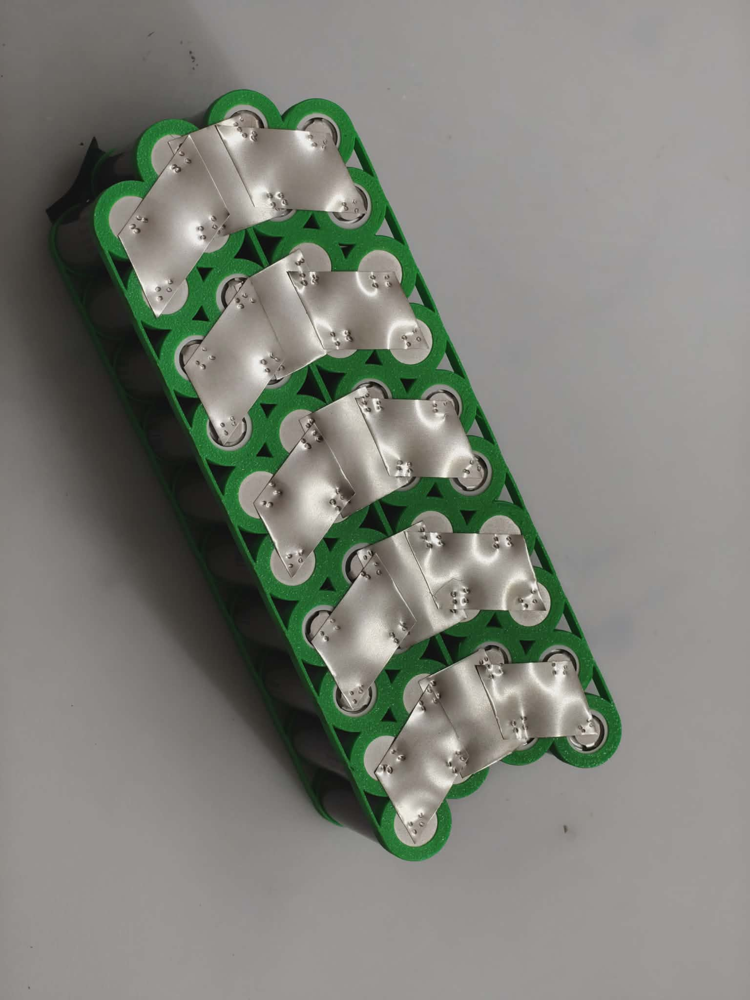
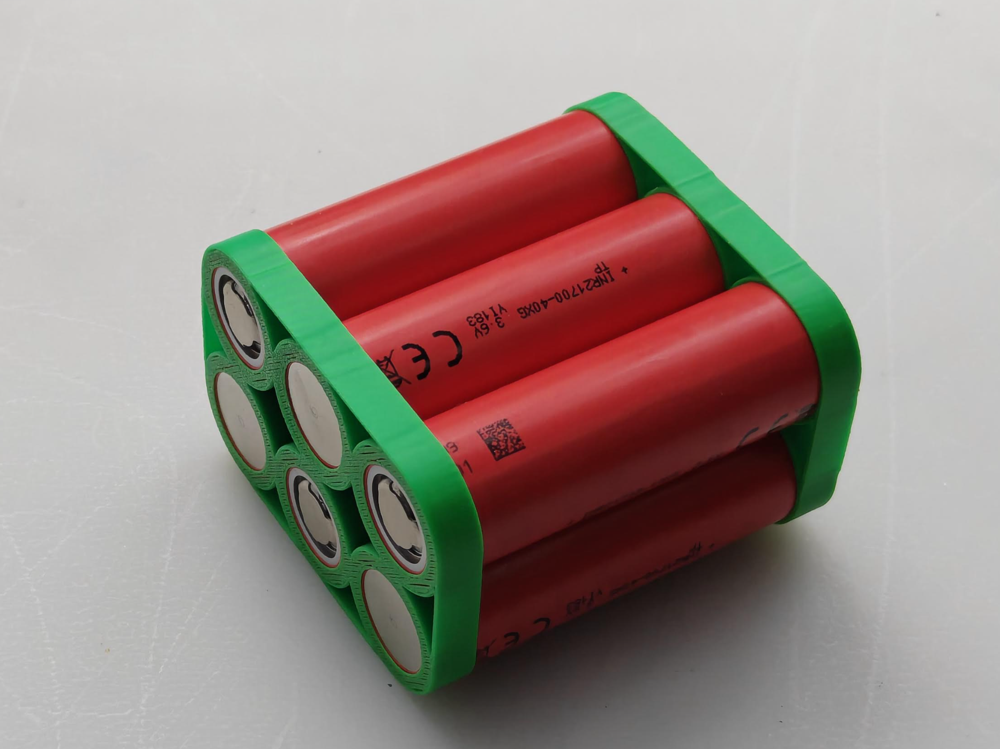

Vad är egentligen batterireparation?
Att laga ett batteri kan betyda många olika saker. Hos Batterilabbet arbetar vi med flera avancerade metoder för att ge ditt batteri nytt liv, från att byta ut enskilda komponenter till att bygga om det helt från grunden. Här rätar vi ut de vanligaste begreppen i branschen baserat på EU:s batteriförodning (EU 2023/1542).
Varför reparera?
-
Billigare: Man kan spara många tusenlappar genom att reparera det gamla och inte köpa ett nytt.
Prestanda: Med högre än orginalkapacitet får du en längre körsträcka med ett renoverat batteri. Uppskattat av många!
Livslängd: Ditt batteri får längre livstid! Vi använder oss bara av de bästa cellerna. På så sätt kan våra batterier hålla i upp till 12 år.
Trygghet: Vi ger 2 års garanti på alla batterier vi renoverar.
Hållbarhet: Spara på klimatet och jordens resurser genom att reparera det gamla istället för att köpa nytt!

Reparation
Åtgärdar specifika komponentfel och kretskort.
Visa metod

Ompaketering
Cellbyte för maximal räckvidd och kapacitet.
Visa metod

Återtillverkning
Helrenovering av moduler till absolut nyskick.
Visa metod

Återanvändning
Behåller friska originaldelar och spar resurser.
Visa metod

Andra Livet
Bygger om celler till nya spännande syften.
Visa metod
Reparation (Repair)
Reparation handlar om att åtgärda ett specifikt fel för att återställa batteriets funktion. Om ett batteri har slutat ta laddning, men själva cellerna fortfarande är i gott skick, kan det räcka med en reparation. Det innebär att vi felsöker och byter ut trasiga komponenter, som ett felande kretskort (BMS), en trasig kontakt eller avbrutna kablar. Genom att reparera det som är trasigt ser vi till att batteriet kan fortsätta användas till det syfte det var tänkt, utan att det kasseras i onödan.
Ompaketering / Cellbyte (Repacking)
När ditt batteri laddar ur snabbt eller har tappat räckvidd beror det oftast på att själva litiumjoncellerna inuti har nått slutet av sin livslängd. Ompaketering innebär att vi plockar ut alla gamla, slitna celler och ersätter dem med ett helt nytt och modernt cellpaket. Vi återanvänder ditt originalskal och den fungerande elektroniken. Resultatet? Ofta får du ett batteri som har mycket högre räckvidd och kapacitet än när du köpte det nytt.
Återtillverkning (Remanufacturing)
Skillnaden mellan en enkel reparation och återtillverkning är att vi här går hela vägen för att återställa produkten till nyskick. I denna process demonteras hela batteriet och vi gör en djupgående utvärdering av alla moduler. Vi byter ut celler och elektronik så dat batteriets kapacitet återställs till minst 90 % av originalkapaciteten (oftast mer). Vi säkerställer att alla celler har exakt samma spänning och "hälsa" (State of Health) så att batteriets blir lika stabilt och säkert som ett helt nytt från fabrik.
Återanvändning (Reuse)
Detta är kärnan i vår hållbarhetsfilosofi. Återanvändning innebär att vi tar varma och fungerande originaldelar som inte är trasigt, till exempel plastskal, kontakter och i många fall elektronikkort, och fortsätter använda dem. Varför tillverka ett nytt plastskal på andra sidan jorden när ditt nuvarande skal fungerar perfekt? Genom återanvändning sparar vi på jordens resurser och minskar koldioxidutsläppen avsevärt.
Det andra livets möjligheter (Repurposing / Second-life)
Vad händer när ett batteri inte längre orkar driva en tung elcykel i uppförsbackar? Även om det är för svagt för sitt ursprungliga syfte, finns det ofta mycket energi och livslängd kvar i cellerna. Repurposing handlar om att ge dessa batterier ett "andra liv" inom ett nytt användningsområde. Ett trött elcykelbatteri kan till exempel byggas om till att bli en utmärkt powerbank för camping, eller fungera som energilagring i kombination med solceller. På så sätt förhindrar vi att värdefulla material blir till avfall i förtid.